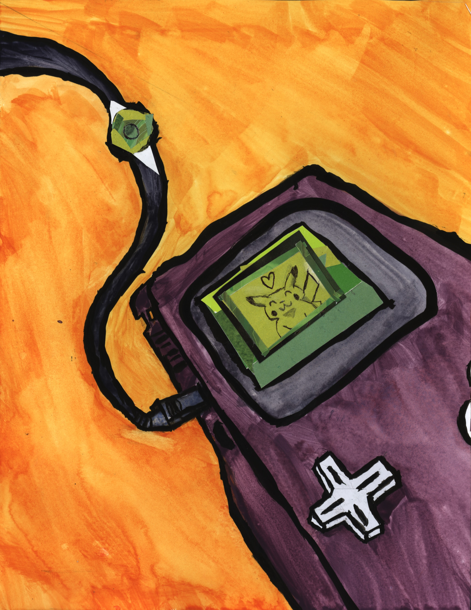
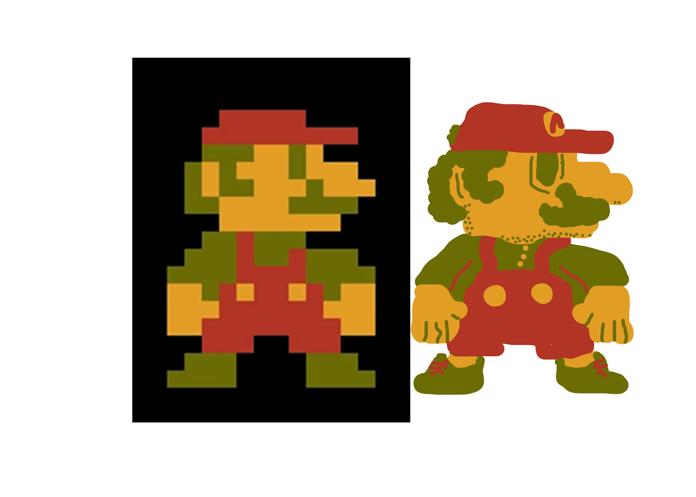
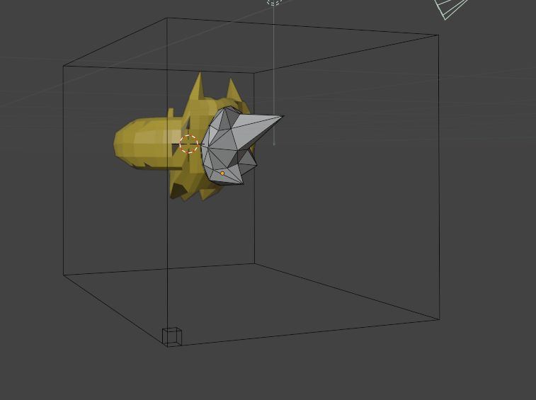

Here is a selection of my work from different classes I have taken.
This piece was created for an assignment to create using multiple meduims (watercolor and collage) It represents diversity in a community.

This piece was created for an assignment to create using multiple meduims (watercolor, ink, and collage) It represents community through video games.
This piece was created for an assignment to practice and create using watercolor paint.
This color wheel was created to practice watercolor painting.
This color wheel was created to practice watercolor painting and blending colors

This piece was created using ink and photoshop to create a patterned design.

This piece was created for an assignment to recreate or remix something. I recreated the original mario sprite to be smooth.
This piece was created in an assignment to create different styles and make fictional artists. This piece belonged to young artist Terrace Keeps
This piece was created in an assignment to create different styles and make fictional artists. This piece belonged to enviromental photographer Jessica Neilese
These pieces were made while recording the proccess of practicing a skill for 7 days. I decided to practice drawing human figures.
This is the last day of the daily habit assignment, showing a finished figure.
This art piece was for an assignment to create a piece of harmless vandalism art. The piece was created to cause minimal damage while being quick to create.

This art piece was for an assignment to create art with a medium that you were uncomfortable with. The piece was made in blender, and is made to represent a real uncomfortable feeling.